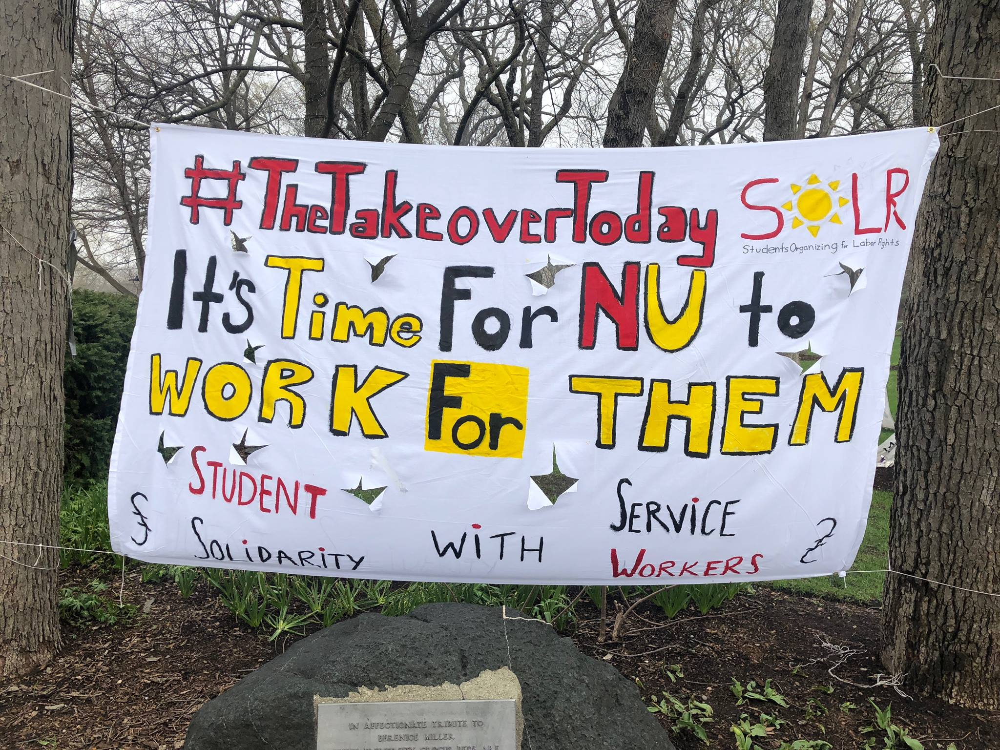
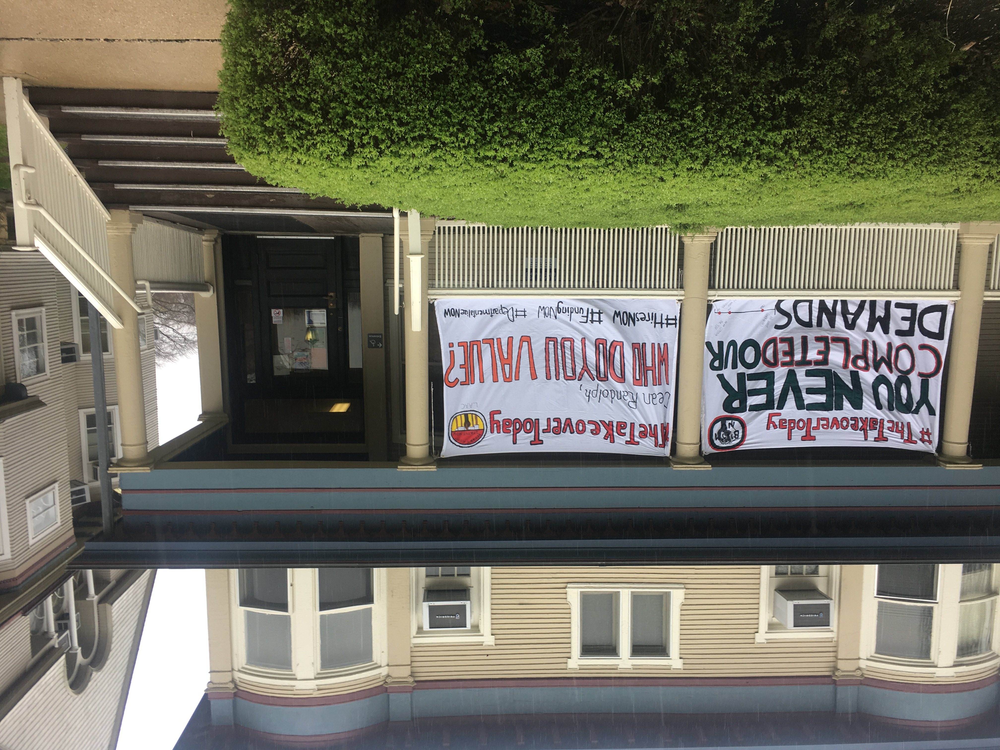
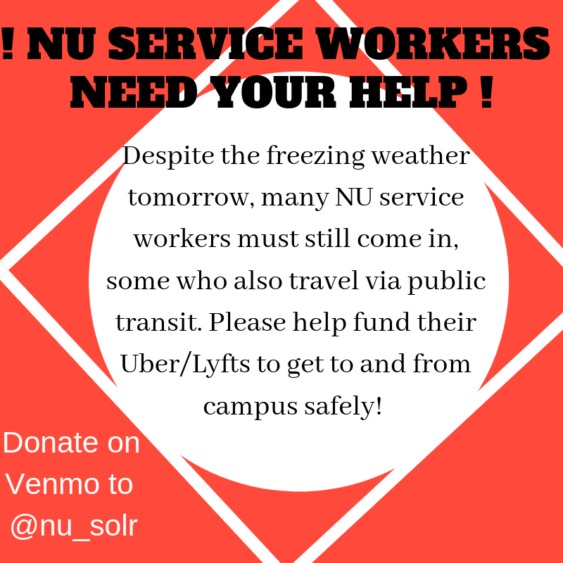
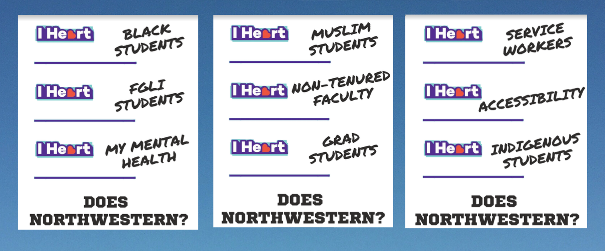
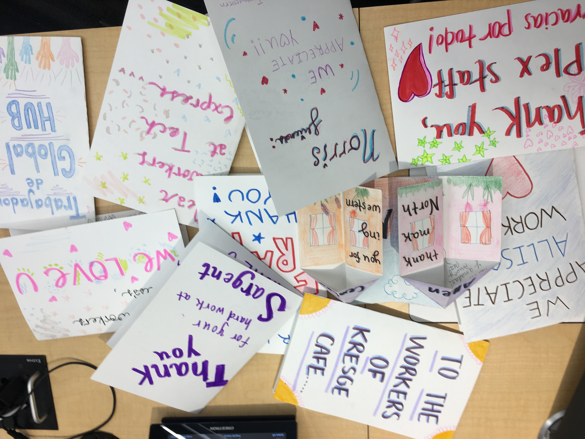
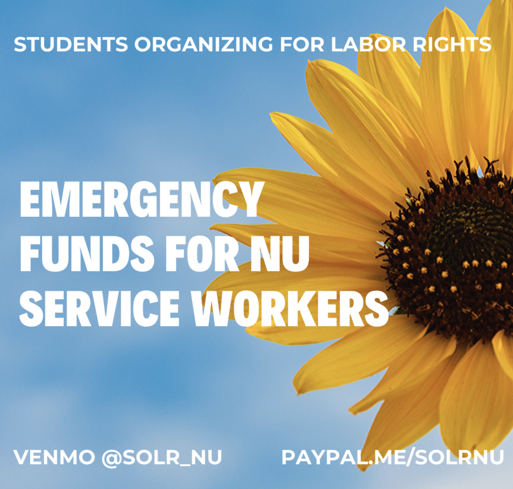

- March 2018: SOLR's Founding
- Compass Food Contractor Transition
- May 2018: Bursar's Commemoration Protest
- Student/Worker Solidarity Campaign
- Jan 2019: Polar Vortex Fundraising
- Spring 2019: Coalition Building
- Fall 2020: Reviving Living Wage Campaign
- Spring 2020: COVID19 Response
-
March 2018: SOLR's Founding
SOLR continues a history of Northwestern campus organizing for equitable labor practices. From 2009-2012, students—along with those employed by NU + its contractors—led a strong campaign demanding the university pay all workers a living wage.
In May 2017 after a protest that disrupted an ICE representative from speaking on campus, students urged the university to better support people of color as well as undocumented folx within its community. A petition made by the Coalition of Students for Immigrant Justice and supported by Associated Student Government called for institutional changes such as the elimination of E-Verify.
SOLR was formed in March 2018 in response to Northwestern’s decision to transition to a new food contractor, Compass Group. It is a chapter of the national student labor organization, United Students Against Sweatshops (USAS).
-
Compass Food Contractor Transition
In March 2018, Northwestern began a new partnership with the foodservice company, Compass Group, after its contracts with Sodexo and Aramark terminated. Kept in the dark about transition process specifics, workers employed by the two previous contractors worried about their job safety.
SOLR mobilized our privileged position as university students to call for a smooth transition that promised:
- job security for all workers
- the maintenance of their exact employment position and benefits
- a waiver of application processes like E-verify and background/drug tests
- and the honoring of contracts made between the workers' previous employers and their union, Unite Here Local 1
To build support within the NU community and put pressure on decision-makers, we circulated petitions with over 1,000 signatures, regularly talked to workers and the union, canvassed alongside them, and met with NU and Compass admin/management.
Ultimately, we were able to help ensure that workers’ concerns were addressed and prioritized. By May, an agreement between the union and Compass was made. However living wage remains a right that Northwestern refuses to guarantee for its workers.
-
May 2018: Bursar's Commemoration Protest
May 2018 marked the 50th anniversary of the 1968 Bursar’s Office Takeover. The demonstration led to the establishment of the Black House, the African American Studies department, and advisory committees dedicated to: increasing Black student admissions, ameliorating financial aid packages, and providing open housing. However, several of the Black organizers’ other demands have remained unfulfilled to this day. Since 1968, the university has continuously repressed, enacted violence on, and refused to prioritize the well-being of Black, Indigenous people of color as well as other marginalized communities.
Student organizers from Northwestern’s BLM chapter, the Latinx Asian American Collective (LAAC), and SOLR banded together to name NU’s egregious cooptation of the Bursar’s Takeover. Together, we implored the university to take widespread action to redress its legacy of white supremacy instead of merely proclaiming values of diversity and inclusion. Each organization created a list of demands that was compiled together and sent to as well as discussed with various administrators. We also organized a day of action, #TheTakeoverToday, to call campus-wide attention to NU’s hypocrisies and oppressive structures.
  -
Solidarity with Campus Service Workers
Since our inception, SOLR has centered working alongside and building relationships with campus service workers. After the completed transition to Compass, workers started sharing with us experiences that clearly revealed the food service company’s inacceptable treatment towards its employees. This began our ongoing campaign to fight for a safe Northwestern work environment and the overall happiness of our workers whom we love so much!

-
Jan 2019: Polar Vortex Fundraising
During the polar vortex, when dangerous subzero temperatures threatened the safety of students, faculty, and administrators, school was closed for three days. However, workers were still expected to come to work and were not given additional sick/paid leave days to use. Within a night, SOLR was able to raise over $2500 to provide workers safe transportation to and from campus. Coordinating with their long work hours, SOLR members called rideshare services for workers late in the evenings as well as early in the mornings everyday for nearly two weeks.
 -
Spring 2019: Coalition Building with other Student Organizers
In addition to labor injustices on campus, several particularly racist occurrences happened throughout the 2018-2019 school year, further adding to the many examples of how Northwestern operates as a white supremacist institution. After a mass protest, the university still decided to retain eugenics researcher Satoshi Kanazawa. Four “it’s okay to be white” stickers were found throughout campus along with a noose in SPAC gym. The institution has still done nothing to identify or hold accountable the perpetrators of these acts of violence.
Amidst outrage and pain, student activists across different organizations like SOLR, BLM NU, LAAC, Fossil Free NU, and Fund Our Care strengthened relationships with one another and collectively worked to bring attention to the ways NU had been failing us. We had a flyering campaign that parodied the university’s annual alumni fundraising initiative and created a disorientation guide exposing the realities of attending NU.
 -
Fall 2020: Reviving the Living Wage Campaign
Using leftover funds from our polar vortex fundraising, we created care packages for our service workers. Additionally, SOLR members had frequent meetings with workers to lay groundwork for reviving the living wage campaign.
 -
Spring 2020: COVID Response
As we entered a global pandemic, SOLR established an emergency fund for campus service workers. Through a Google Form written in both English and Spanish, workers can request financial support. Since mid-March, we have been able to raise over $25,000 and distribute these funds to over 100 workers.
While we have been doing everything we can to help workers during this crisis, we know our emergency funds cannot replace the income they have lost through the university’s shutdown and large-scale layoffs. Earlier in the pandemic, SOLR was able to secure additional days of paid leave for Compass workers. Currently, we are demanding that the university pay all workers their full wages through the duration of COVID-19. We’ve organized email/call-in actions and a #NUDoRight digital campaign to urge Northwestern students, faculty, and staff to voice their concerns for workers. As an institution with a $10.8 billion endowment that even rejected federal funding from the CARES Act, NU has both an undeniable responsibility and capacity to support its employees.
